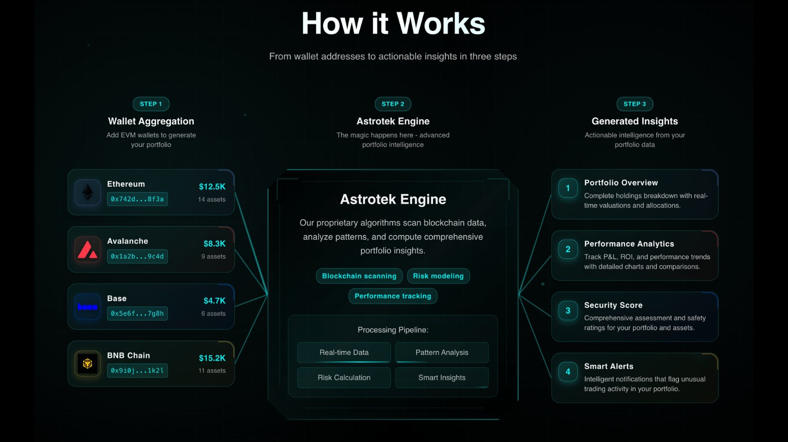

Multi-chain crypto portfolio analytics platform for digital asset investors. Built to give investors the kind of on-chain visibility that institutional desks have but retail never had access to.
Token health scoring, anomaly detection, holder flow analysis, and buy/sell pressure metrics — all updated on a 6-hour cycle. The backend pulls chain data via Moralis, runs it through a scoring pipeline, and stores everything in a DuckDB/MotherDuck warehouse.

Python FastAPI backend, React TypeScript frontend, AWS Cognito for auth, Redis caching, EC2 deployment via PM2. Stripe billing integrated. Scheduler runs token health scoring on a cron cycle.